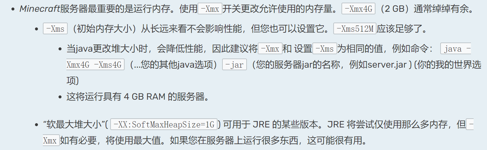
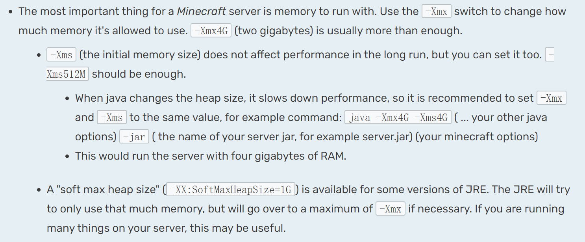

搭建过程
搭建过程中用到putty进行服务器连接，使用宝塔面板进行服务器的文件上传、端口开放。
1、环境
服务器环境是用到centos8，Ubuntu基本一个操作。
咱搭建的是java版的mc，所以要在服务器上安装java环境，具体的安装过程略。
除此之外，因为服务器的客观原因，我们还需要在服务器上安装screen环境以保证我们服务的正常待机。
centos：
1 | sudo yum install screen |
ubuntu：
1 | sudo apt install screen |
2、安装
首先我们准备一个空的文件夹来进行服务器的搭建，下面的操作都是在这个我们新建的空文件夹当中进行的。
mojang提供了mc服务器的傻瓜式安装jar包，我们可以通过wget指令获取官网最新版的服务器jar包
1 | wget https://launcher.mojang.com/v1/objects/35139deedbd5182953cf1caa23835da59ca3d7cd/server.jar |
也可以去官网手动下载server.jar，然后将jar包上传到我们创建的的目录里面
1 | https://www.minecraft.net/zh-hans/download/server/ |
下载完成后，我们可以将jar包改名，标注一下版本（版本号去官网看）
1 | mv server.jar minecraft_server.1.19.jar |
接下来进行初步安装
1 | java -Xmx2G -Xms2G -jar minecraft_server.1.19.jar nogui |
-xmx用来指定我们运行初始堆内存大小，这里因为我服务器最大内存是4G所以设定xms是2G，堆内存调太大服务器会宕机所以不要…
下面是官网的解释（https://minecraft.fandom.com/wiki/Tutorials/Setting_up_a_server）

英文原版：

执行完这个指令后，服务器还没有运行，输出响应错误，通知您需要同意EULA（最终用户许可协议）才能运行服务。
这时候，我们的jar包已经半展开了，在当前目录下会出现一个eula.txt的文件，打开它，修改eula=false为eula=true，意为我们同意了上面的协议。
然后再使用screen运行我们的mc服务，输入下面的指令
1 | screen -S “MC1.19” |
然后直接再次输入mc服务器启动命令
1 | java -Xmx2G -Xms2G -jar minecraft_server.1.19.jar nogui |
然后当你看到进程Done!的时候说明服务启动成功，之后只需要开放一下我们服务器的25565端口(mc默认监听端口)就可以在mc里面访问到我们的服务器了。
然后按ctrl+a+d退出我们运行mc服务器的screen，之后后面想要返回这个screen的话，输入screen -r就可以查看当前运行的screen列表，然后选择后缀是MC1.19的那个，输入screen -r 其全名就可以进入了，这里是因为screen会给我们建立的线程加上一个数字前缀。
服务器更新日志
2022.7.9 将服务器从1.18.2更新到1.19
更新服务器需要我们重新搭建一个1.19的服务器，然后把原来的地图和登录人物的信息上传就可以了。mc服务器的地图和人物信息都保存在我们服务器目录下的world目录里面，一般跨版本也要删区块，需要处理一下里面的地图文件。处理用到amulet（3d地图编辑器）和mca selector（区块编辑器）两个软件。这个服务是我们的好哥们eustrain友情提供的，让我们感谢他🎉🎉🎉🎉。
2022.7.31 up1.19->1.19.1
区块没修改，需要注意的是要去service.properties中修改difficulty=hard将模式修改成困难模式